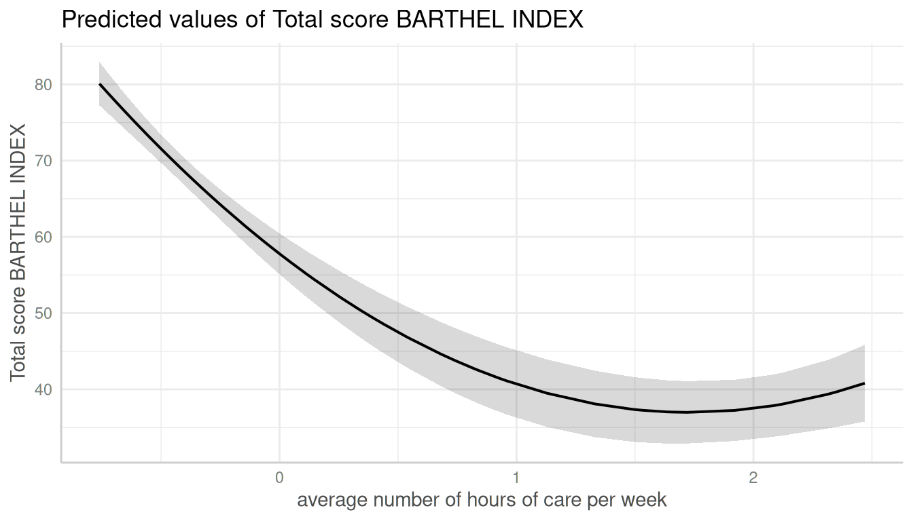
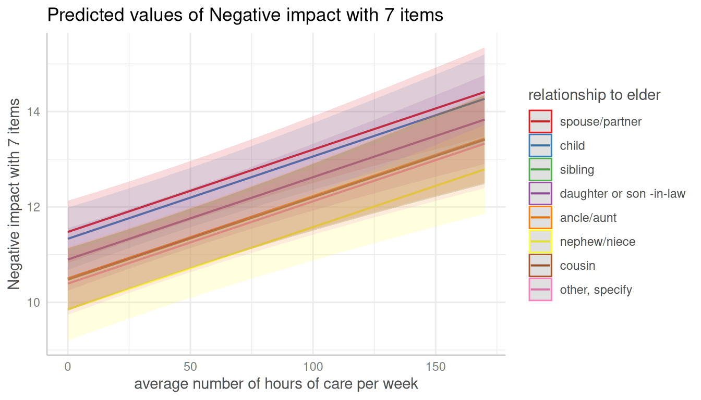
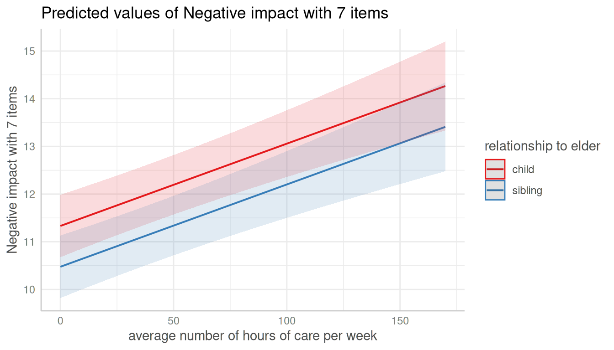

Introduction: Adjusted Predictions and Marginal Means at Specific Values
Daniel Lüdecke
2024-02-27
Source:vignettes/introduction_effectsatvalues.Rmd
introduction_effectsatvalues.RmdAdjusted predictions and marginal means at specific values or levels
This vignettes shows how to calculate adjusted predictions at specific values or levels for the terms of interest. It is recommended to read the general introduction first, if you haven’t done this yet.
The terms-argument not only defines the model terms
(i.e. focal variables) of interest, but each model term can be limited
to certain values. This allows to compute and plot adjusted predictions
for (grouping) terms at specific values only, or to define values for
the main effect of interest.
There are several options to define these values:
A character vector, specifying the names of the focal terms. This is the preferred and probably most flexible way to specify focal terms.
A list, where each element is a named vector, specifying the focal terms and their values. This is the “classical” R way to specify focal terms.
A formula, e.g.
terms = ~ x + z, which is internally converted to a character vector. This is probably the least flexible way, as you cannot specify representative values for the focal terms.A data frame representig a “data grid” or “reference grid”. Predictions are then made for all combinations of the variables in the data frame.
When terms is specified as character vector, values
always should be placed in square brackets directly after the term name
and can vary for each model term. The following examples show how to
specify values for the terms-argument.
- Concrete values are separated by a comma:
terms = "c172code [1,3]". For factors, you could also use factor levels, e.g.terms = "Species [setosa,versicolor]". Iftermsis a named list, it would be specified like this:terms = list(c172code = c(1, 3))orterms = list(c172code = c(1, 3), Species = c("setosa", "versicolor")). As a data frame, this would be:
terms <- data.frame(
c172code = c(1, 3, 1, 3),
Species = c("setosa", "setosa", "versicolor", "versicolor"),
stringsAsFactors = FALSE
)
terms
#> c172code Species
#> 1 1 setosa
#> 2 3 setosa
#> 3 1 versicolor
#> 4 3 versicolorRanges are specified with a colon:
terms = c("c12hour [30:80]", "c172code [1,3]"). This would plot all values from 30 to 80 for the variable c12hour. By default, the step size is 1, i.e.[1:4]would create the range1, 2, 3, 4. You can choose different step sizes withby, e.g.[1:4 by=.5]. As named list, this would beterms = list(c12hour = 30:80)orterms = list(c12hour = seq(1, 4, 0.5)).Convenient shortcuts to calculate common values like mean +/- 1 SD (
terms = "c12hour [meansd]"), quartiles (terms = "c12hour [quart]") or minumum and maximum values (terms = "c12hour [minmax]"). Seevalues_at()for the different options.A function name. The function is then applied to all unique values of the indicated variable, e.g.
terms = "hp [exp]". You can also define own functions, and pass the name of it to theterms-values, e.g.terms = "hp [own_function]".A variable name. The values of the variable are then used to define the
terms-values, e.g. first, a vector is defined:v = c(1000, 2000, 3000)and then,terms = "income [v]".If the first variable specified in
termsis a numeric vector, for which no specific values are given, a “pretty range” is calculated (seepretty_range()), to avoid memory allocation problems for vectors with many unique values. To select all values, use the[all]-tag, e.g.terms = "mpg [all]". If a numeric vector is specified as second or third variable interm(i.e. if this vector represents a grouping structure), representative values (seevalues_at()) are chosen, which is typically mean +/- SD.To create a pretty range that should be smaller or larger than the default range (i.e. if no specific values would be given), use the
n-tag, e.g.terms = "age [n=5]"orterms = "age [n = 12]". Larger values fornreturn a larger range of predicted values.Especially useful for plotting group levels of random effects with many levels, is the
sample-option, e.g.terms = "Subject [sample=9]", which will sample nine values from all possible values of the variableSubject.
Specific values and value range
library(ggeffects)
library(ggplot2)
data(efc, package = "ggeffects")
fit <- lm(barthtot ~ c12hour + neg_c_7 + c161sex + c172code, data = efc)
mydf <- predict_response(fit, terms = c("c12hour [30:80]", "c172code [1,3]"))
mydf
#> # Predicted values of Total score BARTHEL INDEX
#>
#> c172code: low level of education
#>
#> c12hour | Predicted | 95% CI
#> ----------------------------------
#> 30 | 67.15 | 64.03, 70.26
#> 38 | 65.12 | 62.05, 68.19
#> 47 | 62.84 | 59.80, 65.88
#> 55 | 60.81 | 57.77, 63.86
#> 63 | 58.79 | 55.72, 61.86
#> 80 | 54.48 | 51.28, 57.69
#>
#> c172code: high level of education
#>
#> c12hour | Predicted | 95% CI
#> ----------------------------------
#> 30 | 68.58 | 65.41, 71.76
#> 38 | 66.56 | 63.39, 69.73
#> 47 | 64.28 | 61.08, 67.48
#> 55 | 62.25 | 59.00, 65.50
#> 63 | 60.23 | 56.90, 63.55
#> 80 | 55.92 | 52.38, 59.46
#>
#> Adjusted for:
#> * neg_c_7 = 11.84
#> * c161sex = 1.76
ggplot(mydf, aes(x, predicted, colour = group)) + geom_line()
When variables are, for instance, log-transformed, ggeffects
automatically back-transforms predictions to the original scale of the
response and predictors, making the predictions directly interpretable.
However, sometimes it might be useful to define own value ranges. In
such situation, specify the range in the
terms-argument.
data(mtcars)
mpg_model <- lm(mpg ~ log(hp), data = mtcars)
# x-values and predictions based on the full range of the original "hp"-values
predict_response(mpg_model, "hp")
#> # Predicted values of mpg
#>
#> hp | Predicted | 95% CI
#> ------------------------------
#> 50 | 30.53 | 27.84, 33.22
#> 85 | 24.82 | 23.21, 26.42
#> 120 | 21.11 | 19.91, 22.30
#> 155 | 18.35 | 17.11, 19.59
#> 195 | 15.88 | 14.36, 17.41
#> 230 | 14.10 | 12.29, 15.92
#> 265 | 12.58 | 10.48, 14.68
#> 335 | 10.06 | 7.45, 12.66
# x-values and predictions based on "hp"-values ranging from 50 to 150
predict_response(mpg_model, "hp [50:150]")
#> # Predicted values of mpg
#>
#> hp | Predicted | 95% CI
#> ------------------------------
#> 50 | 30.53 | 27.84, 33.22
#> 63 | 28.04 | 25.86, 30.23
#> 75 | 26.17 | 24.33, 28.00
#> 87 | 24.57 | 23.00, 26.13
#> 100 | 23.07 | 21.71, 24.43
#> 113 | 21.75 | 20.52, 22.99
#> 125 | 20.67 | 19.49, 21.84
#> 150 | 18.71 | 17.49, 19.92By default, the step size for a range is 1, like
50, 51, 52, .... If you need a different step size, use
by=<stepsize> inside the brackets,
e.g. "hp [50:60 by=.5]". This would create a range from 50
to 60, with .5er steps.
# range for x-values with .5-steps
predict_response(mpg_model, "hp [50:60 by=.5]")
#> # Predicted values of mpg
#>
#> hp | Predicted | 95% CI
#> --------------------------------
#> 50.00 | 30.53 | 27.84, 33.22
#> 51.50 | 30.21 | 27.59, 32.84
#> 52.50 | 30.01 | 27.42, 32.59
#> 53.50 | 29.80 | 27.26, 32.34
#> 55.00 | 29.50 | 27.02, 31.98
#> 56.50 | 29.22 | 26.79, 31.64
#> 57.50 | 29.03 | 26.64, 31.41
#> 60.00 | 28.57 | 26.28, 30.86Choosing representative values
Especially in situations where we have two continuous variables in interaction terms, or where the “grouping” variable is continuous, it is helpful to select representative values of the grouping variable - else, predictions would be made for too many groups, which is no longer helpful when interpreting adjusted predictions.
You can use
-
"minmax": minimum and maximum values (lower and upper bounds) of the variable are used. -
"meansd": uses the mean value as well as one standard deviation below and above mean value. -
"zeromax": is similar to the"minmax"option, however, 0 is always used as minimum value. This may be useful for predictors that don’t have an empirical zero-value. -
"terciles"calculates and uses the terciles (lower, middle and upper), including minimum and maximum value. -
"terciles2"calculates and uses the terciles (lower, middle and upper), excluding minimum and maximum value. -
"quart"calculates and uses the quartiles (lower, median and upper), including minimum and maximum value. -
"quart2"calculates and uses the quartiles (lower, median and upper), excluding minimum and maximum value. -
"fivenum"calculates Tukey’s five-number-summary (minimum, lower-hinge, median, upper-hinge, maximum). -
"all"takes all values of the vector.
data(efc, package = "ggeffects")
# short variable label, for plot
attr(efc$c12hour, "label") <- "hours of care"
fit <- lm(barthtot ~ c12hour * c161sex + neg_c_7, data = efc)
mydf <- predict_response(fit, terms = c("c161sex", "c12hour [meansd]"))
plot(mydf)
mydf <- predict_response(fit, terms = c("c161sex", "c12hour [quart]"))
plot(mydf)
Transforming values with functions
The brackets in the terms-argument also accept the name
of a valid function, to (back-)transform predicted values. In this
example, we define a custom function to get the original values of the
focal predictor, multiplied by 2.
# x-values and predictions based on "hp"-values, multiplied by 2
hp_double <- function(x) 2 * x
predict_response(mpg_model, "hp [hp_double]")
#> # Predicted values of mpg
#>
#> hp | Predicted | 95% CI
#> ---------------------------------
#> 104.00 | 22.65 | 21.34, 23.96
#> 132.00 | 20.08 | 18.91, 21.25
#> 186.00 | 16.39 | 14.94, 17.84
#> 210.00 | 15.08 | 13.43, 16.73
#> 226.00 | 14.29 | 12.51, 16.08
#> 300.00 | 11.24 | 8.88, 13.61
#> 410.00 | 7.88 | 4.81, 10.95
#> 670.00 | 2.59 | -1.63, 6.82Using a list, the terms argument in the above example
would look like this:
terms = list(hp = hp_double(seq(100, 700, 7))).
Using values from a variable (vector)
val <- c(100, 200, 300)
predict_response(mpg_model, "hp [val]")
#> # Predicted values of mpg
#>
#> hp | Predicted | 95% CI
#> ------------------------------
#> 100 | 23.07 | 21.71, 24.43
#> 200 | 15.61 | 14.04, 17.17
#> 300 | 11.24 | 8.88, 13.61Using a list, the terms argument in the above example
would look like this: terms = list(hp = val).
Pretty value ranges
This section is intended to show some examples how the plotted output
differs, depending on which value range is used. Some transformations,
like polynomial or spline terms, but also quadratic or cubic terms,
result in many predicted values. In such situation, predictions for some
models lead to memory allocation problems. That is why
predict_response() “prettifies” certain value ranges by
default, at least for some model types (like mixed models).
To see the difference in the “curvilinear” trend, we use a quadratic term on a standardized variable.
library(datawizard)
library(lme4)
data(efc, package = "ggeffects")
efc$c12hour <- standardize(efc$c12hour)
efc$e15relat <- to_factor(efc$e15relat)
m <- lmer(
barthtot ~ c12hour + I(c12hour^2) + neg_c_7 + c160age + c172code + (1 | e15relat),
data = efc
)
me <- predict_response(m, terms = "c12hour")
plot(me)
Turn off “prettifying”
As said above, predict_response() “prettifies” the
vector, resulting in a smaller set of unique values. This is less memory
consuming and may be needed especially for more complex models.
You can turn off automatic “prettifying” by adding the
"all"-shortcut to the terms-argument.
me <- predict_response(m, terms = "c12hour [all]")
plot(me)
This results in a smooth plot, as all values from the term of interest are taken into account.
Using different ranges for prettifying
To modify the “prettifying”, add the "n"-shortcut to the
terms-argument. This allows you to select a feasible range
of values that is smaller (and hence less memory consuming) them
"terms = ... [all]", but still produces smoother plots than
the default prettyfing.
me <- predict_response(m, terms = "c12hour [n=2]")
plot(me)
me <- predict_response(m, terms = "c12hour [n=10]")
plot(me)
Adjusted predictions conditioned on specific values of the covariates
By default, the typical-argument determines the function
that will be applied to the covariates to hold these terms at constant
values. By default, this is the mean-value, but other options (like
median or mode) are possible as well.
Use the condition-argument to define other values at
which covariates should be held constant. condition
requires a named vector, with the name indicating the covariate.
data(mtcars)
mpg_model <- lm(mpg ~ log(hp) + disp, data = mtcars)
# "disp" is hold constant at its mean
predict_response(mpg_model, "hp")
#> # Predicted values of mpg
#>
#> hp | Predicted | 95% CI
#> ------------------------------
#> 50 | 25.84 | 21.86, 29.82
#> 85 | 22.70 | 20.67, 24.72
#> 120 | 20.65 | 19.55, 21.76
#> 155 | 19.13 | 17.91, 20.35
#> 195 | 17.77 | 15.91, 19.64
#> 230 | 16.79 | 14.36, 19.23
#> 265 | 15.95 | 13.00, 18.91
#> 335 | 14.56 | 10.73, 18.40
#>
#> Adjusted for:
#> * disp = 230.72
# "disp" is hold constant at value 200
predict_response(mpg_model, "hp", condition = c(disp = 200))
#> # Predicted values of mpg
#>
#> hp | Predicted | 95% CI
#> ------------------------------
#> 50 | 26.53 | 22.91, 30.15
#> 85 | 23.38 | 21.66, 25.11
#> 120 | 21.34 | 20.27, 22.41
#> 155 | 19.82 | 18.34, 21.30
#> 195 | 18.46 | 16.25, 20.67
#> 230 | 17.48 | 14.68, 20.28
#> 265 | 16.64 | 13.31, 19.97
#> 335 | 15.25 | 11.03, 19.47Adjusted predictions for each level of random effects
Adjusted predictions can also be calculated for each group level in
mixed models. Simply add the name of the related random effects term to
the terms-argument, and set
type = "random".
In the following example, we fit a linear mixed model and first simply plot the marginal effetcs, not conditioned on random effects. Please see also the dedicated vignette for mixed models for further details and examples.
library(lme4)
data(efc, package = "ggeffects")
efc$e15relat <- to_factor(efc$e15relat)
m <- lmer(neg_c_7 ~ c12hour + c160age + c161sex + (1 | e15relat), data = efc)
me <- predict_response(m, terms = "c12hour")
plot(me)Changing the type to type = "random" still returns
population-level predictions by default. The major difference between
type = "fixed" and type = "random" is the
uncertainty in the variance parameters. This leads to larger confidence
intervals for adjusted predictions with
type = "random".
me <- predict_response(m, terms = "c12hour", type = "random")
plot(me)
To compute adjusted predictions for each grouping level, add the
related random term to the terms-argument. In this case,
confidence intervals are not calculated, but adjusted predictions are
conditioned on each group level (unit-level) of the random effects.
me <- predict_response(m, terms = c("c12hour", "e15relat"), type = "random")
plot(me)
Adjusted predictions, conditioned on random effects, can also be
calculated for specific levels only. Add the related values into
brackets after the variable name in the terms-argument.
me <- predict_response(m, terms = c("c12hour", "e15relat [child,sibling]"), type = "random")
plot(me)
If the group factor has too many levels, you can also take a random
sample of all possible levels and plot the adjusted predictions for this
subsample of group levels. To do this, use
term = "<groupfactor> [sample=n]".
data("sleepstudy")
m <- lmer(Reaction ~ Days + (1 + Days | Subject), data = sleepstudy)
me <- predict_response(m, terms = c("Days", "Subject [sample=8]"), type = "random")
plot(me)